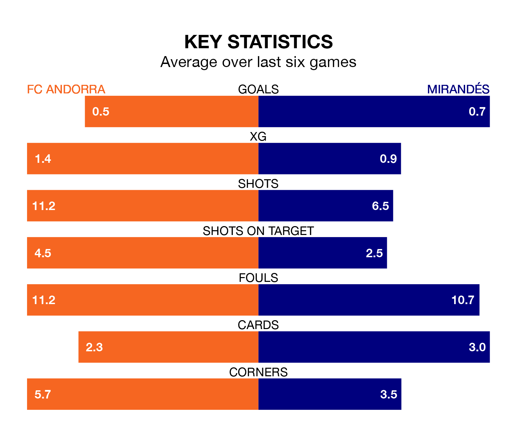

Mirandés come to Estadi Nacional to play FC Andorra on Saturday in poor form, having collected just four points from their last six games.
The visitors have won one and drawn one of their last six fixtures, while Andorra have a win and two draws.
Andorra are bottom of the table after 32 games, of which they have won seven and drawn eight, earning 29 points.
Mirandés are five places ahead of the hosts in 17th, with nine wins and 10 draws putting them on 37 points.
In Carlos Martín, the away team have one of the league's most on-form strikers so far this season. He has notched 13 goals in 30 appearances, to sit third in the scoring charts.
Andorra's top scorers, with four goals each, are Manuel Nieto Sánchez and Aurélien Scheidler.
With 24 goals in 32 games so far this season, Andorra are the league's joint-second-lowest scorers with 0.8 goals per game. And they are conceding more than average, letting in 40 goals at a rate of 1.2 per game.
Mirandés, meanwhile, are above average scorers, with 1.2 goals per game, compared to a league average of 1.1. They have conceded 1.4 goals per game.
In the last three years, Andorra and Mirandés have played each other on three occasions. Mirandés won two of them and they drew once.
Their last meeting was on September 10, when Mirandés won 4-3 at home.
Andorra's last match was on Saturday, a 1-0 loss against FC Cartagena.
Mirandés drew 0-0 with Real Zaragoza last time out, on Sunday.
Updated: 12:16 (UTC), 25/03/24